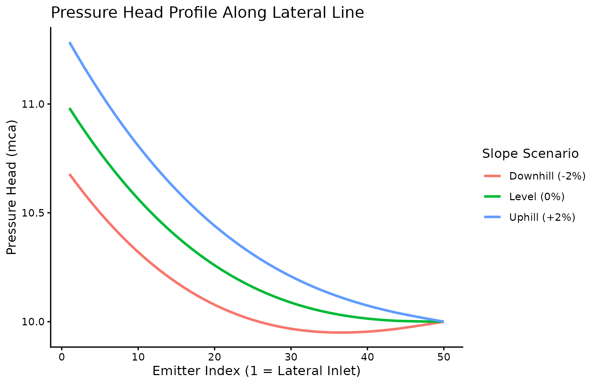
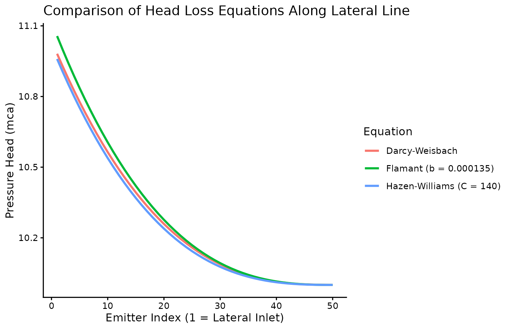

Pressure and Flow Profile Along Irrigation Lateral Lines
Joao Batista Tolentino Jr.
Source:vignettes/lateral-line-profile.Rmd
lateral-line-profile.RmdOverview
In pressurized micro-irrigation systems (drip and micro-sprinkler), spatial pressure variation along a lateral pipe directly governs water application uniformity. Because discharge decreases stepwise at each emitter outlet, friction head loss along the lateral is non-linear.
calc_backstep() implements the backstep
numerical procedure: starting from a known boundary pressure
head at the distal emitter, it steps upstream segment by segment toward
the lateral inlet. You can choose the head loss equation from the
hf package via method ("darcy",
"flamant", or "hw") and specify the volumetric
flow rate unit directly with flow_unit (such as
"m3/s", "L/s", or "L/h").
1. Level Lateral Line (slope = 0) and Flow Units
(flow_unit)
Consider a polyethylene drip lateral with internal diameter (), absolute roughness , and emitters spaced at intervals.
Emitter discharge follows
with discharge coefficient
and exponent
.
By setting flow_unit = "L/h", there is no need to manually
convert the emitter coefficient to
,
and both emitter_flow and section_flow are
returned directly in
.
Assuming a target distal pressure head of
:
level_profile <- calc_backstep(
end_pressure = 10,
diameter = 0.012,
spacing = 0.30,
n_emitters = 50,
slope = 0,
emitter_coef = 3.18,
emitter_exp = 0.50,
method = "darcy",
flow_unit = "L/h",
roughness = 1.5e-6
)
head(level_profile)
#> # A tibble: 6 × 5
#> emitter pressure_head emitter_flow section_flow head_loss
#> <int> <dbl> <dbl> <dbl> <dbl>
#> 1 1 11.0 10.5 509. 0.0540
#> 2 2 10.9 10.5 499. 0.0520
#> 3 3 10.9 10.5 488. 0.0501
#> 4 4 10.8 10.5 478. 0.0482
#> 5 5 10.8 10.4 467. 0.0463
#> 6 6 10.7 10.4 457. 0.0445
tail(level_profile)
#> # A tibble: 6 × 5
#> emitter pressure_head emitter_flow section_flow head_loss
#> <int> <dbl> <dbl> <dbl> <dbl>
#> 1 45 10.0 10.1 60.3 0.000843
#> 2 46 10.0 10.1 50.3 0.000674
#> 3 47 10.0 10.1 40.2 0.000506
#> 4 48 10.0 10.1 30.2 0.000337
#> 5 49 10.0 10.1 20.1 0.000169
#> 6 50 10 10.1 10.1 0Inlet operating pressure head and total lateral inlet flow rate are
retrieved from the first row (emitter == 1):
# Required inlet pressure head (mca)
level_profile$pressure_head[1]
#> [1] 10.98152
# Total inlet flow rate (L/h)
level_profile$section_flow[1]
#> [1] 509.46652. Effect of Terrain Slope (slope)
The slope parameter specifies elevation change per unit
length
():
-
Positive values (
slope > 0) represent uphill flow (elevation gain toward the distal end). -
Negative values (
slope < 0) represent downhill flow (elevation drop toward the distal end).
uphill_profile <- calc_backstep(
end_pressure = 10,
diameter = 0.012,
spacing = 0.30,
n_emitters = 50,
slope = 0.02,
emitter_coef = 3.18,
emitter_exp = 0.50,
flow_unit = "L/h",
roughness = 1.5e-6
)
downhill_profile <- calc_backstep(
end_pressure = 10,
diameter = 0.012,
spacing = 0.30,
n_emitters = 50,
slope = -0.02,
emitter_coef = 3.18,
emitter_exp = 0.50,
flow_unit = "L/h",
roughness = 1.5e-6
)
comparison_df <- rbind(
cbind(level_profile, scenario = "Level (0%)"),
cbind(uphill_profile, scenario = "Uphill (+2%)"),
cbind(downhill_profile, scenario = "Downhill (-2%)")
)
ggplot(comparison_df, aes(x = emitter, y = pressure_head, color = scenario)) +
geom_line(linewidth = 1) +
labs(
title = "Pressure Head Profile Along Lateral Line",
x = "Emitter Index (1 = Lateral Inlet)",
y = "Pressure Head (mca)",
color = "Slope Scenario"
) +
theme_classic()
3. Comparing Head Loss Equations (method)
In addition to Darcy-Weisbach (method = "darcy",
default), calc_backstep() supports the Flamant
(method = "flamant") and Hazen-Williams
(method = "hw") empirical equations, forwarding
equation-specific parameters (such as roughness or
coef) through ...:
flamant_profile <- calc_backstep(
end_pressure = 10,
diameter = 0.012,
spacing = 0.30,
n_emitters = 50,
slope = 0,
emitter_coef = 3.18,
emitter_exp = 0.50,
method = "flamant",
flow_unit = "L/h",
coef = 0.000135
)
hw_profile <- calc_backstep(
end_pressure = 10,
diameter = 0.012,
spacing = 0.30,
n_emitters = 50,
slope = 0,
emitter_coef = 3.18,
emitter_exp = 0.50,
method = "hw",
flow_unit = "L/h",
coef = 140
)
methods_df <- rbind(
cbind(level_profile, method = "Darcy-Weisbach"),
cbind(flamant_profile, method = "Flamant (b = 0.000135)"),
cbind(hw_profile, method = "Hazen-Williams (C = 140)")
)
ggplot(methods_df, aes(x = emitter, y = pressure_head, color = method)) +
geom_line(linewidth = 1) +
labs(
title = "Comparison of Head Loss Equations Along Lateral Line",
x = "Emitter Index (1 = Lateral Inlet)",
y = "Pressure Head (mca)",
color = "Equation"
) +
theme_classic()